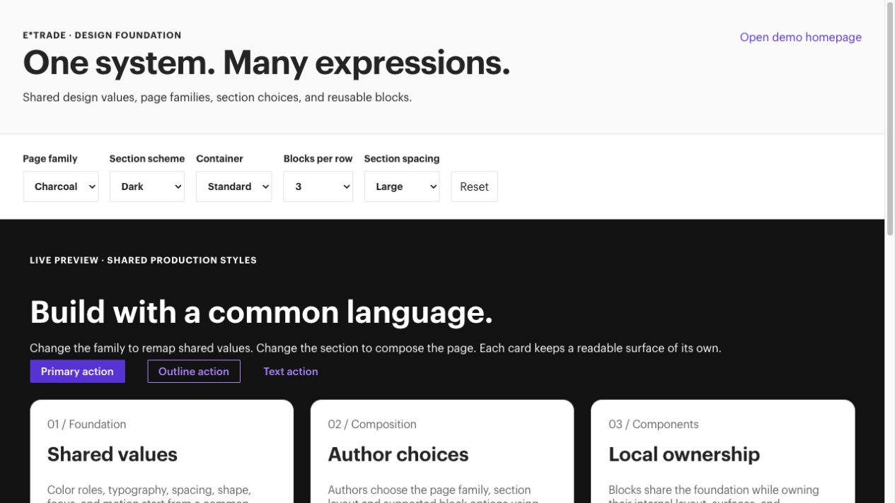

E*TRADE on Edge Delivery Services
Migration playbook for the E*TRADE prospect site. Use it to find the right preview, see how a page is assembled, and check what still needs review before publication.
Updated against develop at 94877ea.
Project overview
Editors maintain pages and shared content in Adobe Document Authoring (DA). Developers maintain blocks, styles and integrations in GitHub. A branch preview combines that branch’s code with previewed DA content. Publishing a DA document and merging a code change are separate release steps.
Where to start
- Making your first edit? Add a shared brokerage card to a draft, then use the authoring reference for section grids, images and buttons.
- Building a page? Look up the block definitions and example tables, including Hero Dark and Cards Product.
- Reviewing a change? Compare the develop preview with the same page on the main preview. Check related fragments and disclosures with the page.
- Maintaining the migration? Start with how a change reaches a visitor. The import record documents the original seven-page sample. The release checklist covers the current authoring and code workflow.
Delivery architecture
The homepage hero has two owners. The author chooses its headline, artwork and links in DA. The developer controls how the Hero Dark block arranges those elements on screen. The branch preview brings their work together.
- AuthorEdit the headline or image on the DA page.
- PreviewSave and preview the page. Open the branch URL to review it.
- PublishPublish the approved page and changed dependencies for live delivery.
- DeveloperEdit the responsive layout in the Hero Dark block.
- PreviewPush the branch and review its code with the previewed DA page.
- ReleaseMerge through
developtomainto ship the layout.
This playbook follows a third path. Edit docs/index.html on a Git branch, review its preview, then release to main for GitHub Pages. Environments and ownership
Add a brokerage card in DA Canvas
Add a shared brokerage card to a draft copy of Home. The draft stores one link to the card. Editors maintain its wording and actions in the shared record.
- In DA, copy
/hometo an unused draft path, then open the copy in Canvas. A branch setting changes the preview code. DA page content is shared across branches. - Place the cursor inside the draft’s Cards Product block. Open Panels → Extensions → Reusable Content → Structured Cards. Enter
/cards/product/guide-core-brokerageand select its preview. The picker identifies the matching block as Cards Product. - Choose Add row to selected block. The last row now contains a single link to the shared card. To start a separate group, place the cursor in a paragraph between blocks and choose Create matching block.
- Save the draft and choose Send → Preview → Update. On the develop preview of the draft, find the new card after the existing cards. Check its reading order on a phone and tab through both actions on a desktop.
Check the source against the result
| In the draft’s Cards Product table | On the rendered page |
|---|---|
One new row with one linked path in its only populated cell/cards/product/guide-core-brokerage |
Brokerage Account appears with its description, followed by Learn more and Open account. In this example record, both actions lead to the brokerage detail page. Check each destination against the approved record. |
If the card is missing, confirm that the shared source has been previewed and that its link is alone in the row’s only nonempty cell. A second populated cell makes it an ordinary authored row. If the record or its rich-text body fails to load, the shared card is omitted. If Reusable Content is unavailable in Canvas, add the same row manually. Brokerage card source · Canvas instructions
Authoring reference
Page and section metadata
Use one Metadata table for page-wide choices such as the design family (Theme) and legal source (Disclosures). Insert a horizontal rule to start a new section. To arrange two blocks side by side, put this table in their section, with the first row merged across both columns.
| Section Metadata | |
|---|---|
| Container | standard |
| Grid | 2 |
| Gap | m |
This grid stacks the blocks below 768px. A section introduction spans both columns. Use Spacing to adjust padding above and below the section. Page and section fields

Images and alternative text
The Cards block crops images to 4:3. Cards Article uses 16:9 by default. Keep the subject inside the crop on phone and desktop. Hero Product preserves the source proportions. Describe what an informative image adds, leave decorative images’ alternative text empty, and give an image-only link a name that tells readers its destination. Keep rates and offer terms in the copy. Image preparation guide · Current Hero Product image rules
Inline links and actions
Link words within a sentence for an inline link. For a button in ordinary default content, put a descriptive link alone in its paragraph and make it bold for a primary button or italic for an outline. Blocks can assign actions by position. Hero Dark uses the first standalone link in its main copy as the primary action and later ones as secondary actions. Preserve campaign parameters when editing a destination. Link formatting and block exceptions
Use case & requirements
The migration covers prospect experiences such as browsing accounts, comparing products, reading pricing and planning information, and following an account-opening or sign-in link. Authors assemble pages from headings, links, images, block tables and shared documents.
| Requirement | How to check it |
|---|---|
| Page structure | Use one page heading, section headings and card headings in reading order. Use the block definitions for the table name, options and cell order. |
| Responsive design | Check the chosen theme, image crop, text and action order on a phone and a desktop. Test keyboard access and enlarged text for menus, tabs, accordions and the carousel. |
| Claims and legal copy | Keep each claim with its approved rate, fee or campaign terms. Preview the page’s disclosure set and its referenced documents, then follow the markers on the rendered page. |
| Links and imagery | Preserve destinations, campaign parameters, disclosure references and image alternatives when importing or reusing content. |
Key references
The site handoff guide covers everyday authoring. The develop source contains block contracts, tests and integration details.
Deliverables
| Area | Available on develop |
|---|---|
| Page components | Responsive heroes, product and account cards, feature panels, tabs, FAQ, the story carousel and market-data blocks. See the block definitions. |
| Global navigation and legal content | Shared header and footer documents, theme-aware artwork, a floating dock and per-page disclosure sources. See header and footer. |
| Reusable Content | The DA Canvas extension can insert shared fragments, add a Structured Card to a matching block or create the matching block. The nine Cards blocks and Carousel Story accept linked card records alongside ordinary rows. See Reusable Content and the schema map. |
| Authoring tools | Link Options configures tracking, routing and cookie-preference actions. Disclosure Manager edits shared sets. Import & Export works with saved DA page sources. The onboarding tour provides in-editor examples. Access depends on the workspace’s extension registration. |
| Rates and market data | Supported blocks can use manual or service-backed bank rates. The market blocks support sample and live data modes. Verify the selected source, timestamp and unavailable state on the delivery host. See the integration guide. |
Header & mega-menu Implemented
The site header loads the shared /nav document. Set page metadata Nav to use another local fragment. Keep four sections in order, including an empty section when a role is unused.
- Utility links. Nest links to build a Customer Service & Support menu. Mark the sign-in item with
Loginto place its link beside search on mobile. - Brand. Add linked logos with alternative text under
LightandDark. The header selects the image for its own color scheme. - Main navigation. Use a link for a direct destination or a nested list for a menu. Mark each link group with
Column. APromoitem can supply its own image, heading, copy and call to action. - Account action. Add the account-opening link here. It appears in the desktop bar and in the mobile drawer.
At 1085px and wider, one menu opens at a time. Panels with three or more link columns span the bar. Below 1085px, the drawer uses Back buttons and omits promo cards. Check the skip link, use Arrow Down to enter a desktop panel, then press Escape to return to its trigger.
Search submits the visitor’s query to E*TRADE’s public search endpoint. Page metadata Search Action can change that destination. Sign-in follows the authored link. Header authoring example
Brand design system Implemented
In DA, page metadata Theme selects the Purple or Charcoal design family. Both use GraphikETRADE Regular, Medium and Semibold for body text and headings, with Helvetica Neue, Helvetica, Arial and sans-serif fallbacks. Section eyebrows use the Chivo Mono stack with a monospace fallback.
- Purple uses a light header and footer, deep-purple inverse surfaces and 2px corners for cards that use the shared radius.
- Charcoal uses a dark header and footer, separate base and raised inverse surfaces and a 16px shared card radius.
- Local overrides. Set
Header Themeto light or dark for the header alone. In Section Metadata,Themeoverrides the family for that section andColor Schemeselects light or dark text and background. A legacy light or dark page Theme selects only the header scheme.
Surface and link colors
The base type scale uses 1rem body copy. At the default browser size, HTML headings range from 36px to 18px below 900px and from 48px to 20px at wider widths. Blocks can use their own heading sizes.
Developers maintain shared color and type roles in styles/brand.css, family overrides in styles/themes.css and the EDS variable mappings in styles/styles.css. DA theme examples · Interactive style showroom · Style system reference
Page import Original import
The migration started with seven E*TRADE pages. Each has a saved HTML file and image manifest. Five import scripts use 16 component parsers to turn matching source elements into DA block tables. The files below document what the original import produced. Source snapshots · Block parsers · Import reports
| Import script | Original source paths | Recorded output |
|---|---|---|
home | /home | Bundle and report. The report lists 14 block instances, including the hero, calculator, cards and FAQ. |
what-we-offer | /platforms/what-we-offer/investment-choices/what-we-offer/pricing-and-rates | One bundle and three reports. Platforms recorded one Hero Dark and the title “Agreement Library”. Investment Choices and Pricing & Rates recorded zero block matches. |
what-we-offer-2 | /what-we-offer/our-accounts | Source script only. |
our-accounts | /what-we-offer/our-accounts/brokerage-account | Source script only. |
why-etrade | /why-etrade | Source script only. |
How to repeat an import
- Open the matching snapshot and check the source component selectors. Each script embeds its own template configuration. Keep that copy and the template inventory in sync when changing selectors.
- Run the matching script in the web importer. Before parsing, it clears consent overlays and inserts section breaks. After the parsers replace matched components, the transformers remove the original navigation, footer, scripts and tracking attributes, then attach Section Metadata to the marked breaks. Import transformers
- Review the reported block names alongside the resulting DA tables. On preview, check source headings, media, tabs and fee tables before reusing the document. A successful run can produce zero matched blocks.
Page patterns Six route layouts
Six paths have layout rules in the site code. Four appear in the original import inventory. Welcome Back and Planning were added later. The table lists the principal blocks in the November 18 develop previews. Saved authoring examples also record earlier markup, assets and metadata. Route layout rules · Saved page examples
| Page path | Main authored pattern |
|---|---|
/home | IPO campaign using Hero Dark (Overlay), calculator, feature columns, pricing, product and award cards, FAQ and floating dock. |
/home/welcome-back | Welcome Hero with a sign-in handoff, Market Ticker, welcome cards, Market Overview and Market Top Five. |
/what-we-offer/our-accounts | Hero Light, Tabs Accounts and a pricing FAQ. The account selector uses tabs on wide screens and a category menu on narrow screens. |
/what-we-offer/our-accounts/brokerage-account | Hero Product, pricing and numbered cards, an offer banner, the overlapping Power E*TRADE Pro feature, award and article cards, and FAQ. |
/planning | Split Hero Dark, planning and tools icon cards, feature columns, a compact offer banner, articles and FAQ. |
/why-etrade | Balanced split Hero Dark, an “Our story” carousel, audience icon cards and promotional articles. |
Platforms, Investment Choices and Pricing & Rates share an original importer. The site applies its six route-specific layouts by pathname. When copying a reviewed DA page to a new path, check its section metadata, block variants and disclosure references in preview. Starter-template registration is tracked separately in the handoff checklist. See page patterns for examples.
Visual fidelity In progress
Recent changes on develop refine specific components across Home, Our Accounts, Brokerage, Why E*TRADE and Planning. The authored block name and available width determine which layout a reviewer should expect.
| Page or component | What to check in preview |
|---|---|
| Home campaign | For Hero Dark (Overlay), the heading sits above the artwork. Copy and actions overlap its top-left corner on wide layouts and stack above the image on narrow ones. An optional Mobile image row supplies alternate artwork below 768px. The default Hero Dark keeps its copy above the image. Hero Dark variants |
| Home features and cards | Check wrapping and alignment of the light feature’s actions, the centered introduction above the product cards on wide screens, and the spacing above each card action. Product card styles |
| Our Accounts | Compare the light hero typography, active tab treatment and FAQ section spacing. At a narrow width, switch categories with the menu and verify that the matching panel appears. Account tabs |
| Brokerage | The product hero retains the artwork’s aspect ratio and places the offer below it. Numbered cards use 96px regular-weight numerals. To overlap a bordered copy panel with its image, author the Columns Feature Overlap variant. Brokerage feature settings |
| Why E*TRADE and Planning | The split-hero eyebrows use the monospace face. On Why E*TRADE, inspect the story carousel’s 64px arrow buttons, selected dot and keyboard focus. Story carousel styles |
For page-level sign-off, compare the current branch preview with its E*TRADE source at the same viewport and campaign state. Record the route, authored variant and any remaining differences. The saved handoff screenshots document examples from an earlier review.
Implementation decisions
| Decision | What it means for the next edit |
|---|---|
| DA owns page content | Edit copy, links, artwork, legal text and block options in their source documents. A new Git branch still reads shared DA content. Use a draft document for experiments. |
| Blocks own their presentation | Choose a documented variant before adding one. Page and Section Metadata control the surrounding layout and theme. Shared tokens provide type, colors, spacing and focus styles. |
| Reusable sources have their own lifecycle | Copy a block table for an independent edit. Use a fragment or a Structured Card for shared content. Preview or publish each changed source and review the pages that consume it. |
| Legal references use stable IDs | In a structured disclosure set, the item’s order determines its displayed number. Keep the stable ID with the claim when moving a card or section. See shared content and disclosures. |
| Code and content ship separately | GitHub supplies branch code. DA supplies previewed or published content. GitHub Pages serves this playbook from the docs directory on main. |
Open items
Preview and release status on November 18, 2026
| Where | Observed result |
|---|---|
| EDS previews on develop and main | All six route-specific pages loaded, as did Platforms and Investment Choices. Both preview roots showed the AEM boilerplate. Use /home to review the IPO campaign. |
| Pricing & Rates | /what-we-offer/pricing-and-rates returned 404 on both previews. Confirm the document path and preview it in DA before reviewing the fee tables, rate settings and disclosure references. |
| EDS live | The main live host returned HTTP 401 to an unauthenticated request. Verify published content with authorized access. |
| GitHub Pages | The restored brand reference was available on develop. The public playbook root returned 404 while the release to main was open. The site handoff guide remained available at its own address. |
Integration checks
The Welcome Back form clears its inputs and directs visitors to the authored sign-in URL. Authentication happens at that destination. Tracked links queue consent-aware events. Sending those events to analytics requires a configured sender. See the Welcome Hero contract and tracking configuration.
Issues to revisit with the next content review
- Check the funding, direct-deposit and rollover links reported in the Our Accounts FAQ. Our Accounts link report
- Compare Home’s FAQ and offer copy and the Brokerage section order with their approved references. Home copy · Brokerage order
- Check disclosure superscripts in DA Canvas and follow the same references on the rendered page. Canvas disclosure markers
Next steps
For a first pass through these steps, use the brokerage card draft. If the saved page and preview disagree, check the symptoms below.
- Preview in DA. Save the changed sources and page. In Experience Workspace, open Send, choose Preview, then Update. Open the resulting page with the branch code you want to review.
- Review. Compare the branch preview with the reference at desktop and phone widths. Check image crops, tabs, FAQ links, sign-in handoffs and disclosure markers on the affected page.
- Release code. Merge reviewed feature work into
develop, then sync the reviewed changes tomain. Check the affected path on the main preview with that version of the code. - Publish content. Publish changed card bodies and disclosure fragments first, then the card records or disclosure sets that reference them, and finally the page. For each approved source, choose Preview & Publish in the Send menu, then Update. With live access, open the exact route and verify its links, artwork and disclosures. Publishing checklist · Adobe editor instructions
- Verify documentation. When a release includes this file, wait for the Pages deployment in GitHub Actions, open the documentation root and follow the README’s brand link.
When a change affects several pages
List the pages that use the shared fragment, card or disclosure set. Preview one representative draft first. For a larger rollout, paste the reviewed URLs into Apps → Bulk in Experience Workspace, run Preview and inspect the result for each URL. Independently copied pages need their own edits. Shared and bulk changes
When the preview looks wrong
| Symptom | What to check first |
|---|---|
| A saved edit is missing | Compare the DA document path and preview URL. Preview the shared source as well as the page that references it. For a layout change, check which code branch the URL uses. |
| A disclosure marker still shows letters, or the legal footer is missing | Match the superscript ID to the page’s disclosure set. Preview the set and each referenced fragment. Disclosure Manager audits the saved page. Check references inside shared fragments on the rendered page too. |
| A rate displays a marker or an unavailable value | For {{rate:base}}% APY, check that the separate Rate settings cell in that row contains Name: base. The rate source supplies the number. Check the selected product, balance or term and the configured source. Keep the approved APY wording, dates and legal copy with the claim. Rate settings and fallback behavior |
| A Canvas extension is missing | Check the editor’s Extensions panel and the selected ref. The DA administrator can verify the extension’s URL and registration in the site’s library configuration. |
Block definitions
Choose a block to see how to author it in Adobe Document Authoring (DA). Each example shows the table name and cell order. Apply the indicated heading styles, insert images and links, and replace bracketed text with approved content. Header has its own four-section document example.
Heroes
HeroPlaces a heading and actions over a full-width background image, as on Platforms.
- How to author it
- Add a heading and copy in one cell and an image in another. The first image fills the background. Copy, image and actions are optional. To name the rows, use Eyebrow, Heading, Content and Image in the first cell and place each value in the next. Put each action link in its own paragraph.
- Options and behavior
- Default or Wide. Wide gives the Investment Choices introduction more room for copy on desktop. A hero without an image uses the purple background.
| Hero | |
|---|---|
| H1: Trading platforms Compare trading tools for web, desktop and mobile. Link: Explore platforms → [approved platforms URL] | Insert the approved background image with its alternative text. |
Check in preview Check the top-left-anchored crop at phone and desktop widths and verify that the heading stays legible over the artwork.
Hero DarkIntroduces a campaign with dark-surface copy, actions and media.
- How to author it
- The default and Overlay layouts use the first H1, H2 or H3, supporting paragraphs and optional standalone links. In the default layout, the first standalone link is the primary action. Put the image and its optional caption in their own cell. For a default hero with video, use an MP4 link in the Media row and describe it in Media description. Split accepts optional Eyebrow, Heading, Content, Image and Offer rows. Use a role in the first cell and rich content in the remaining cells.
- Options and behavior
- Default places copy above media. Overlay keeps the headline above the artwork and places supporting copy and actions over the image on wide layouts. A Mobile image row supplies alternate artwork below 768px. Split places text beside the image and optional offer. Split, Balanced gives both columns equal width. Split, Inset increases desktop copy padding.
| Hero Dark (Overlay) | |
|---|---|
| H1: Access to IPOs starts here [Approved campaign description] Link: Open an account → [approved application URL] | |
| Insert the desktop campaign image. Add its caption or disclosure in the same cell. | |
| Mobile image | Insert the alternate phone artwork. |
Check in preview Give the main image alternative text that works for both versions. On a narrow screen, check the alternate artwork, caption and actions in reading order.
Hero LightIntroduces a page with a heading, supporting text and optional links on the surrounding section surface.
- How to author it
- Place the heading, paragraphs and standalone links in authored reading order. Cells and rows are combined. For a page introduction, use an H1. Headings and actions can be omitted when only copy is needed.
- Options and behavior
- The standard layout is text-only. The first plain standalone link becomes an outline button and later ones become secondary actions. Inline links remain in their sentences.
| Hero Light |
|---|
| H1 Our Accounts |
| [Approved account introduction.] |
| Standalone link labelled See all pricing and rates. |
Check in preview Verify that the heading appears once and that the pricing link remains usable when the introduction switches from centered phone copy to left-aligned desktop copy.
Hero ProductPairs a product introduction with an image and an optional offer beneath it, as on Brokerage.
- How to author it
- Use a role in the first cell and its content in the next. Eyebrow, Heading, Content, Image and Offer are optional and can be reordered. Put each main action in its own paragraph. In Offer, separate the heading, approved terms and link into paragraphs. Imported unlabelled copy and image cells also work.
- Options and behavior
- The standard layout preserves the image’s proportions and stacks the copy, media and offer on mobile. The first plain action in Content is primary. The first plain Offer action is secondary.
| Hero Product | |
|---|---|
| Eyebrow | Brokerage accounts |
| Heading | H1 [Product name] |
| Content | [Product description.] Add a standalone link labelled Open an account. |
| Image | Insert the approved product image with alternative text. |
| Offer | H3 [Offer title]. Add a terms paragraph and a standalone link to the offer details. |
Check in preview Check that the full image and the offer’s separate headline, terms and link remain visible on phone and desktop.
Welcome HeroPresents a welcome campaign alongside a sign-in panel, as on Welcome Back.
- How to author it
- Use two-column rows labelled Login, Campaign and Image. All are optional. In Login, add a standalone link labelled Log on to enable the form. Recovery and help links may follow. In Campaign, use a heading, copy and standalone links. Image takes one background image for the entire hero.
- Options and behavior
- The standard layout shows the campaign beside the login panel on wide screens. On phones and in narrow containers, the login panel appears above the campaign. Keyboard and screen reader order follows the document, with campaign content first. Log on clears the form and opens the authored sign-in destination.
| Welcome Hero | |
|---|---|
| Login | H2 Log on. Add a standalone Log on link to the approved sign-in URL. |
| Campaign | H1 Welcome back. Add the approved campaign paragraph and standalone link. |
| Image | Insert a campaign background with a crop that accommodates both panels. |
Check in preview Check the phone layout, tab through both panels and follow the sign-in and recovery links. Keep important campaign information in text so it survives the background crop.
Cards
Use one row per item. All nine Cards blocks and Carousel Story also accept shared records. To reuse one, put a single link to its /cards/ document in its own row. You can mix shared and ordinary rows. See the worked example and structured card fields.
CardsGroup related content when each item can use its own heading, copy, image and links.
- How to author it
- Each nonempty row becomes one card. Put an optional picture in its own first cell, then the heading and rich text in the following cell. Extra cells and nested lists keep their reading order.
- Options and behavior
- Use the plain block name. The grid fits as many columns as the container allows. Card images use a 4:3 crop.
- Shared card schema
card· How to reference a card from DA
| Cards | |
|---|---|
| Image of the trading screen with descriptive alternative text | H3: Trading platforms Explore web, desktop and mobile tools. Link: Explore platforms → /platforms |
Check in preview Check that the crop keeps the subject visible, then tab through the links in reading order.
Cards AccountCompare account types using a name, short description and account actions beneath an accent bar.
- How to author it
- Use one row per account. Put the H3, description and each standalone action paragraph in the same cell. A separate Rate settings cell in that row can bind a rate marker. Extra content cells are read in order.
- Options and behavior
- Use the plain block name. The first action defaults to an outline and later actions to text links. The grid grows from one to three columns as space permits.
- Shared card schema
card-account· How to reference a card from DA
| Cards Account |
|---|
| H3: Brokerage Account [Approved account description] Link: Account details → /what-we-offer/our-accounts/brokerage-account |
Check in preview Check action order and destination. If the account shows a rate, confirm its units, disclosure and value for the configured balance or term.
Cards ArticleLink to editorial content or highlight a promotional story with artwork.
- How to author it
- Each row is one article. Put the optional image in the first cell. In the second, put an optional introductory label in a paragraph before the H3, then a summary and a standalone link. Links in the summary stay inline.
- Options and behavior
- Default cards use inset 16:9 artwork. Promo places a copy panel over full-card artwork. Exactly four cards can form a four-column row when space permits.
- Shared card schema
card-article· How to reference a card from DA
| Cards Article (Promo) | |
|---|---|
| Article artwork with alternative text | Thought leadership H3: Expert research and insights from Morgan Stanley Link: Explore library → [research library destination] |
Check in preview Preview the crop and the label above the headline. Check that longer copy fits in the panel and the action opens the intended article or library.
Cards AwardPresent a recognition with its attribution and the disclosure that qualifies the claim.
- How to author it
- Use one row per award. The first cell can hold a badge image or :award: for a decorative trophy. The second holds the H3 award name, description, disclosure superscript and attribution. The media cell can be empty.
- Options and behavior
- Use the plain block name. Headings render as H3 and cards stack on phones, with up to three across on wider screens. Award names, dates and sources are authored.
- Shared card schema
card-award· How to reference a card from DA
| Cards Award | |
|---|---|
| :award: | H3: [Approved award title and year] [Recognition claim] [superscript disclosure ID] [Awarding organization] |
Check in preview Compare the title, year and attribution with the approved claim. Follow its numbered reference to the matching footer disclosure.
Cards IconHelp visitors choose an audience, planning goal or tool using short icon-led cards.
- How to author it
- Put the icon in the first cell and an H3, description and optional standalone action in the second. Use an image or a supported icon name, such as book, home-lending or ira-selector. In a Planning offer row, enter offer in the first cell and the terms, disclosure and action in the second.
- Options and behavior
- Default shows up to three cards across. Welcome Back uses up to two with accent bars. Planning groups life events. Tools shows up to four cards and gives the first action an outline.
- Shared card schema
card-icon· How to reference a card from DA
| Cards Icon (Tools) | |
|---|---|
| ira-selector | H3: IRA Selector Compare Traditional and Roth IRA options. Link: Get started → [IRA Selector destination] |
Check in preview Check that the icon renders alongside the correct title and that the action opens the named tool. For an offer, check its terms and disclosure.
Cards NumberedShow reasons or steps whose order matters.
- How to author it
- Put each reason in one row. Its content cell holds an H3, description and optional standalone link. The block generates a number from the position of each nonempty row. Extra cells join that reason’s content.
- Options and behavior
- Use the plain block name. A numbered list stacks on mobile and can display up to three cards across. The large numerals follow the current row order.
- Shared card schema
card-numbered· How to reference a card from DA
| Cards Numbered |
|---|
| H3: Wide range of investments [Description of the investment choices] Link: Learn more → /what-we-offer/investment-choices |
| H3: Mobile trading [Description of the mobile trading tools] Link: Explore platforms → /platforms |
Check in preview Move a draft row and confirm the cards renumber consecutively. Remove any number typed into a heading to avoid duplicate numbering.
Cards PlatformPresent platforms or investment choices with artwork and a link to each detail page.
- How to author it
- Each row contains an optional image in the first cell and an H3, description and standalone link in the second. With a single standalone action, the link covers the card and inline links in the description remain independently usable.
- Options and behavior
- The default uses larger cards and an outlined first action. Compact uses full-width images, smaller left-aligned copy and a text action with a chevron. Both layouts stack on phones and can grow to three columns.
- Shared card schema
card-platform· How to reference a card from DA
| Cards Platform | |
|---|---|
| Platform screenshot with alternative text | H3: Power E*TRADE [Approved platform description] Link: Learn more → [platform detail destination] |
Check in preview Use the keyboard to reach the card action and any inline link separately. Check their destinations and the image crop on a phone.
Cards PricingCompare prominent prices or fees with the label, conditions and disclosure for each amount.
- How to author it
- Begin a row with the amount alone in a paragraph, then its H3 label, supporting text and optional standalone link. An offer can start with its heading. For an explicitly bound bank rate, put its Rate settings in a separate cell in the same row. Trading fees are authored values.
- Options and behavior
- Default actions are outlined. Text Links uses arrow links. Band creates a dark blue summary with a shared action area below the amounts. Put the section H2 immediately before a Band table.
- Shared card schema
card-pricing· How to reference a card from DA
| Cards Pricing (Text Links) |
|---|
| $0 H3: Stocks [Fee conditions and disclosure superscript] Link: Learn more → [pricing details destination] |
Check in preview Check that the numeric amount receives the large type and its fee label and disclosure appear on the same card. In Band, verify the shared action below the grid.
Cards ProductCompare named products with an optional rate and a product-detail action.
- How to author it
- In one row, put the product H3, optional rate H4, supporting paragraphs and standalone links in the content cell. For a dynamic rate, pair the numeric marker with a separate Rate settings cell in that row. Keep units and disclosures in the authored text.
- Options and behavior
- Default cards have outlined actions and fit up to two per row on wider screens. Three Columns raises that limit to three. Rates support manual, API and hybrid settings.
- Shared card schema
card-product· How to reference a card from DA
| Cards Product (Three Columns) | |
|---|---|
| H3: Premium Savings Account H4: {{rate:base}}% APY [Approved base-rate terms and disclosure] Link: Learn more → [savings product destination] | Rate settings Name: base Mode: api Product: 3100 Field: advertisedAPY Balance: 0 Fallback: -.-- |
Check in preview Preview the rate and its unavailable state. Check the base-rate label, any promotional rate, the approved terms and the link destination.
Section layouts
ColumnsPlace ordinary content side by side, such as explanatory text and a supporting image.
- How to author it
- Author one table row for each horizontal group. Put the contents of each column in its own cell. The first row establishes the column-count class. Headings, paragraphs, lists, pictures and standalone links are optional. Use an image-only cell when it should receive the image-column treatment.
- Options and behavior
- Column count comes from the cells. Rows generally sit side by side from 900px and stack in narrow layouts. Image-only cells can move ahead of text on phones. The homepage pricing introduction has its own two-column layout.
| Columns | |
|---|---|
| Heading 2: How the application works Paragraph: [Approved introduction] | [Application illustration with descriptive alternative text] |
Check in preview Check the reading order and image placement on a phone and in a narrow section. Follow any links in the text column.
Columns FeaturePair feature artwork with a heading, explanatory copy and actions. The Brokerage treatment places the copy in a bordered panel over the artwork.
- How to author it
- Use one row with an image in one cell and copy in the other. The copy cell can include an eyebrow, Heading 2, paragraphs and standalone action links. For Overlap, put the image first and the copy second. Keep headings and links in the copy cell so the image cell is recognized as media.
- Options and behavior
- Light and Dark override the section surface. Image Right moves media to the right on wide layouts. Media First keeps a first-cell image ahead of copy on phones. Outline changes the first action, Band removes the outer card treatment, and Award limits recognition artwork. Overlap places the panel across the image’s side on wide layouts and over its lower edge on smaller layouts.
| Columns Feature (Dark, Media First, Outline, Band, Overlap) | |
|---|---|
| [Platform screenshot with descriptive alternative text] | Eyebrow: Trading tools Heading 2: Explore the platform Paragraph: [Approved feature description] Standalone link: Explore tools → [approved platform URL] |
Check in preview For the Brokerage treatment, set section Theme to Charcoal, Background to inverse-raised and Spacing to xl. Check the panel at desktop and phone widths and make sure the text and action stay legible over the artwork.
Banner OfferPresent a campaign headline, terms and one or more actions together in a single band.
- How to author it
- Author the campaign copy in one cell. Add a heading, terms, an optional promo code and each action as a separate linked paragraph. An optional image can go in its own cell. The block combines content from all rows in order and preserves links inside the terms.
- Options and behavior
- Default uses a dark surface and centers an offer with one action and no image. Light uses a compact light layout. Compact uses a dark layout with an outline action and an optional thumbnail. Banner artwork is hidden on phones.
| Banner Offer (Compact) | |
|---|---|
| [Optional campaign image] | Heading 2: [Approved campaign headline] Paragraph: [Approved eligibility and terms] Standalone link: View offer details → [approved offer URL] |
Check in preview On a phone, confirm that the copy still communicates all terms with the artwork hidden. Follow the action and any inline legal links.
SeparatorDraw a decorative stepped transition between two section backgrounds.
- How to author it
- Place the table in its own section with a section break before and after it. All rows are optional. Use two cells per row for setting and value. Set the adjoining sections’ backgrounds in their own Section Metadata.
- Options and behavior
- First section color and Second section color accept CSS colors or light and dark. Line break location sets the bend from 0% to 100% and defaults to 50%. Height applies at all widths unless Mobile height overrides it. Both accept positive pixel values. With neither set, the defaults are 81px desktop and 45px phone. Line color sets the outline or accepts none.
| Separator | |
|---|---|
| First section color | dark |
| Second section color | light |
| Line break location | 50% |
| Height | 81px |
| Mobile height | 45px |
Check in preview Check both edges against the actual neighboring section colors on desktop and phone. In its own section the divider should reach both sides without a gutter.
Interactive blocks
Accordion FAQLet readers open individual questions or expand all answers, including answers with lists, links or pricing tables.
- How to author it
- Use one row per question. Put the question in the first cell and a rich-text answer in the second. Additional answer cells are joined in order. A separate Rate settings cell can bind a numeric marker in that answer. Place an optional section heading immediately before the table and an optional standalone link immediately after it.
- Options and behavior
- The default follows the section theme, then the page family. Purple uses divided rows with plus/minus controls. Charcoal uses rounded rows with chevrons. Flat selects divided rows in either family. Pricing is the older name for Flat.
| Accordion FAQ (Flat) | |
|---|---|
| How do I find the forms? | Open the forms directory. Link “forms directory” to [approved forms URL]. |
| Which documents should I bring? | A bulleted list of the documents approved for this process. |
Check in preview Open a question with the keyboard, try Expand all and Collapse all, and follow an answer link. Keep table headers in native tables so readers can navigate wide answers on phones.
Tabs AccountsGroup account choices into categories that readers can switch with desktop tabs or a compact selection menu.
- How to author it
- Author one row per category. The first cell is its plain-text label. The second holds the panel: optional Heading 2 and introduction, then a list with one account per item. Give each account a Heading 3, description and separate linked action paragraphs. Additional cells can hold content or named Rate settings for that panel.
- Options and behavior
- The first category opens by default. A zero-based fragment such as #tab_1 opens the second category. At wide widths, arrow keys move between tabs. Narrower layouts use a labeled select. Learn more links use text styling and application actions use outline styling.
| Tabs Accounts | |
|---|---|
| Investing | Heading 2: Investing accounts Introduction: [Approved category overview] List item: Heading 3 [Account name], description, standalone Learn more link to [details URL] and Open an account link to [application URL]. |
| Banking | Heading 2: Banking accounts List item: Heading 3 [Bank account name], description and standalone Learn more link to [details URL]. |
Check in preview Switch every category with the keyboard and the phone select. Test a direct #tab_1 link and verify that each application action opens the intended account destination.
Carousel StoryTell a history or sequence as a horizontal series of stories.
- How to author it
- Use one row per story. Put the optional image in the first cell. In the second, place the year or introductory label in a paragraph before the H3, followed by its description and optional standalone link. Put the rows in the desired sequence.
- Options and behavior
- Use the plain block name. One story fits in narrow layouts and two on wider screens. Visitors scroll, choose a dot or use Previous and Next. Controls appear when stories overflow. Stories advance on visitor input.
- Shared card schema
card-story· How to reference a card from DA
| Carousel Story | |
|---|---|
| Archival image | 1982 H3: An idea is born [Approved account of the founding] |
| Archival image | 1983 H3: The click heard ’round the world [Approved account of the first online trade] |
Check in preview Focus the story list and try Left, Right, Home and End. Confirm the visible-story announcement and selected dot update, and that the arrows stop at either end.
Widget CalculatorShow the approved cash credit for a selected funding tier. Visitors choose among authored thresholds.
- How to author it
- Use two columns. Each tier row needs a positive whole-dollar funding threshold and its whole-dollar credit. An explicit zero credit is valid. Optional named rows are Heading, Description, Promo code, Primary CTA, Secondary CTA, Funding label, Credit label, Select label and Disclaimer. Omit the promo rows for a standalone calculator.
- Options and behavior
- A slider and a phone or narrow-container range selector share the same tiers. The highest range ends in a plus sign. Legacy empty credit cells can draw from a dated local snapshot. Enter each approved credit explicitly for a new campaign.
| Widget Calculator | |
|---|---|
| Heading | [Approved calculator heading] |
| Funding label | Funding amount |
| Credit label | Cash credit |
| [First approved threshold in whole dollars] | [Approved credit for this threshold in whole dollars] |
| [Next approved threshold in whole dollars] | [Approved credit for the next threshold in whole dollars] |
| Disclaimer | [Approved campaign terms and disclosure references] |
Check in preview Replace bracketed tier cells with numbers before preview. Step through every range, including the highest plus range, on both controls and compare the displayed credits with the approved campaign terms.
Market data
All three blocks use sample data from /data/market-data.json by default. Set Market Data Mode to live in page Metadata to use the configured service. A failed request displays an unavailable state and a Refresh control. Authors supply labels and disclosures. The selected data source supplies the numbers.
Market TickerShows quotes and signed changes for the Dow, Nasdaq, S&P and 10-year Treasury.
- How to author it
- The table can be empty. To give the ticker an accessible name, enter Label in the first cell and the name in the second. The default is Market indices.
- Options and behavior
- The four index labels are fixed. Their quotes come from the selected market data source. The page setting Market Data Mode applies to this block and the other market blocks on the page.
| Market Ticker | |
|---|---|
| Label | Market indices |
Check in preview Confirm all four index labels appear. Check the sample or delay notice, then use Refresh. A missing quote should display an unavailable state.
Market OverviewLets readers compare four index charts, inspect individual observations and look up a stock quote.
- How to author it
- Use optional key and value rows. Heading sets the chart title. Search label names the quote lookup. An empty table uses Market overview and Get quotes.
- Options and behavior
- The four index tabs, chart data table and symbol lookup are built in. The selected data source supplies chart values and suggestions. Selecting a symbol opens its E*TRADE quote page.
| Market Overview | |
|---|---|
| Heading | Market overview |
| Search label | Get quotes |
Check in preview Use arrow keys to change indices, compare a chart point with its table row, then use the keyboard to select a suggested symbol.
Market Top FiveShows up to five stocks, mutual funds or ETFs for the category a reader selects, with a disclosure for each category.
- How to author it
- Use a setting in the first cell and its value in the second. Heading names the selector. Default sets the initial category. Add a disclaimer row for each of the three categories using its exact identifier followed by a space and disclaimer.
- Options and behavior
- Default accepts TopDivYieldStocks, MostSearchedMFs or TopETFs and falls back to stocks when omitted or unrecognized. To rename any category, add its identifier followed by a space and label. Keep the identifier in Default even when the displayed label changes.
| Market Top Five | |
|---|---|
| Heading | Top five |
| Default | TopETFs |
| TopETFs label | Top performing ETFs |
| TopDivYieldStocks disclaimer | [Approved stock disclosure] |
| MostSearchedMFs disclaimer | [Approved mutual fund disclosure] |
| TopETFs disclaimer | [Approved ETF disclosure] |
Check in preview Switch through all three categories. Open Disclaimer each time and compare its text with the approved copy for that category. A missing disclosure leaves its control hidden.
Navigation and shared content
HeaderBuilds public navigation from the shared /nav document or the local fragment named in page metadata Nav.
- How to author it
- Author four document sections in order, separated by horizontal rules. Keep empty positions when omitting a role. Utility is a bulleted list, Brand a list of linked logo variants, Main navigation a list of links or nested menus, and Account action a single optional link. The example lists the four sections of the source document.
- Options and behavior
- Use page metadata Header Theme (light or dark) to override the page family’s header palette. Header Logo Light and Header Logo Dark can override the image. Login marks the utility item shown beside mobile search. Column and Promo mark nested desktop menu entries. Nav Link Base and Search Action configure destinations.
Navigation document (/nav), in section order
Check in preview Open a desktop submenu with the keyboard, press Escape and check focus return. Below 1085px, check the drawer, Back control and marked login link.
DisclosuresDisplays approved legal copy inline or after the global footer and links numbered references to their entries.
- How to author it
- For an inline table, put a role or number in the first cell and rich text in the second. Introduction, Notice, Logo and Closing are optional. Numeric rows hold the corresponding legal copy. A single-cell block containing just a source link loads that document or structured set instead.
- Options and behavior
- For after-footer delivery, set page metadata Disclosures to a legal document or a disclosure-set source. Rich-text documents use top-level ordered lists for numbered items. Structured sets use stable IDs such as offer and number nonempty items in set order. Add the matching ID as superscript at the claim. If a referenced fragment fails to load, the entire region is hidden.
| Disclosures | |
|---|---|
| Introduction | [Approved introductory text.] |
| 1 | [Approved text for numbered disclosure 1.] |
| Closing | [Approved closing statement.] |
Check in preview For this numeric example, follow superscript 1 to its entry. For a structured set, follow the superscript ID and confirm its displayed number after reordering the set.
Floating DockKeeps account and offer actions in reach as visitors scroll.
- How to author it
- Use one block per page. In each row, put the action type in the first cell and a labelled link in the second. Include at least one link. All roles are optional. The first primary link becomes the main button. Empty or unlabelled links are skipped.
- Options and behavior
- Offer and login add their respective icons. Primary selects the main action and additional types become secondary links. A single row of three linked cells also supports the existing imported labels. Home can create the dock from its original sticky campaign links.
| Floating Dock | |
|---|---|
| offer | Link labelled View offer to the approved offer page. |
| login | Link labelled Log on to the approved sign-in page. |
| primary | Link labelled Open an account to the account-opening page. |
Check in preview With primary and secondary actions present, check that the primary link stays visible below 768px. Open the other actions and press Escape to return focus to the toggle.
FragmentReuse an authored document wherever its content should follow the same source.
- How to author it
- Use one cell containing the extensionless, root-relative path of the local source, as a link or plain text. A standalone link whose path contains /fragments/ can also expand automatically. Keep that link in its own paragraph because automatic loading replaces the paragraph.
- Options and behavior
- An explicit Fragment block alone in its section preserves the source’s sections. Beside other blocks, its source sections are flattened into that shared section. The loader fetches the local document’s plain HTML. Preview or publish the source separately from its consuming pages.
| Fragment |
|---|
| /fragments/[shared-source-name] |
Check in preview Replace the placeholder with the reviewed source path. Preview that source and each affected page, checking section backgrounds, repeated headings, links and images.
WidgetLoad a developer-supplied component with its own HTML, styles and JavaScript.
- How to author it
- Use one cell containing an actual hyperlink to /widgets/[implemented-name].html. A standalone link to a /widgets/ path can also create the block automatically. The loader uses the widget’s folder and filename to request matching .html, .css and .js assets from the site code.
- Options and behavior
- Query parameters become data attributes for the implementation to read. This checkout contains the loader but has no widgets/ asset directory. Obtain a deployed widget path before using this block. The funding calculator uses the separate Widget Calculator table.
| Widget |
|---|
| Link: Open [implemented widget name] → /widgets/[implemented-name].html |
Check in preview Confirm the three matching files exist in the branch used for preview and that the widget loads and responds to the keyboard.
Library BriefAdds collapsible author guidance to a block library gallery while keeping the guide out of DA’s insertable examples.
- How to author it
- Use a two-column Library Metadata (Guide) table. Title and Description are optional plain-text settings. Add at least one other row with a descriptive label and nonempty rich text. Place actual example blocks in separate sections after the guide.
- Options and behavior
- On local and preview gallery pages the Guide option becomes a Library Brief. The title defaults to Authoring guide. Legacy Library Brief tables still render and remain available to the native picker until their heading is updated.
| Library Metadata (Guide) | |
|---|---|
| Title | Hero Dark authoring guide |
| Description | Choose a layout and prepare the artwork. |
| Table structure | Put the heading and supporting copy in their own paragraphs. Put the image and caption together in a separate cell. |
| Supported options | Use Overlay for copy over the image on wide screens. |
Check in preview Expand the guide in gallery preview. In the DA Blocks picker, verify the example is available to insert and the guide itself is absent.
Developer notes
Run the site and inspect a block
Use Node.js 24 or later. Install development tools from the lockfile, then start the local proxy with previewed content. Inspect the plain HTML before changing a decorator. buildAutoBlocks can transform this markup before the block runs.
npm ci
npx -y @adobe/aem-cli up --url https://develop--etrade--adobedrago.aem.page
# In a second terminal
curl http://localhost:3000/home.plain.html
npm run checkPrepare a change for review
Scope CSS to the block, keep shared helpers in scripts/ and leave the vendored scripts/aem.js intact. Check the affected page at wide and narrow widths, with keyboard navigation and enlarged text.
Commit messages and PR titles use Conventional Commits. Before pushing a feature branch targeting develop, run npm run commitlint -- --from origin/develop --to HEAD alongside npm run check. Include an actual branch preview URL in the PR. See the contribution guide.
Maintain this playbook
Edit docs/index.html and keep the brand reference address stable. Review the file at /docs/index.html on the branch preview. Once the change reaches main and Pages deploys, check the public playbook and its brand link.